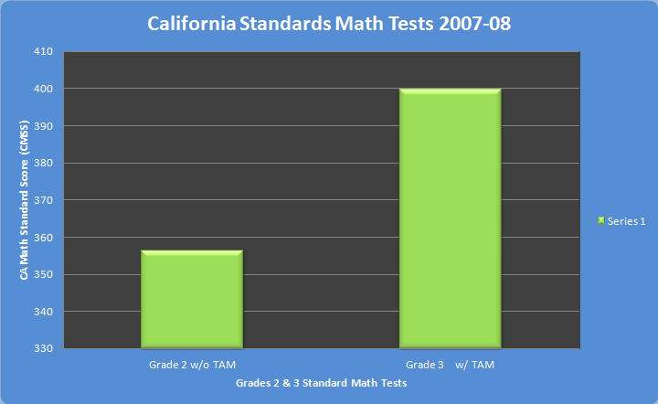

Research StudyToones Academic Music is based on five years of research — an informal study at St. Cecilia Catholic School (San Francisco), another at John Muir Elementary School (San Francisco), and a research study at the Hoover K- 8 Magnet Math and Technology School (Redwood City). All three studies showed significant improvement in learning and understanding math. TAM’s latest research was recently published in the journal Educational Studies in Mathematics. It reveals that students in a music-based program scored significantly higher on math tests than their peers who received regular instruction. Most encouraging has been the evidence showing that this method is especially effective in the way it uses rhythm to teach fractions, a fundamental concept that can be difficult for many students. Courey summarized the results of the Hoover study: Preliminary findings suggest both experimental and control groups improved in their conceptual understanding of fraction concepts. The experimental group outperformed the control group on the music notation measure suggesting increased ability to move between fraction symbols and representations. The experimental group outperformed the control group on a measure of abstract fraction computation suggesting transfer of fraction equivalency concepts to improve accuracy in computation. Teachers in experimental classrooms valued our instruction and felt they could and would use the program with proper training and materials.Academic Music has operated successfully at Allen Elementary School in San Bruno School since 2007. In fact, where it has been integrated into classroom teaching (third grade and above), students’ scores on the California Standard Test (CST) Math exam have improved significantly. According to Allen Elementary’s principal, Kit Cosgriff, "Academic Music brings music into the classroom and gets children to learn math in a different way that's symbolic and not dependent on language." Because the school serves many students who don’t speak English as their first language, he introduced the program to help them learn math in ways that are not language-dependent. The program has exceeded his expectations. Cosgriff believes the jump in test scores reflects the impact of Academic Music. Fourth-graders showed the largest gains, rising from 55 percent proficient in 2007 to 90 percent in 2011. Third-graders advanced from 70 to 79 percent during that period. Results of the study at Hoover Elementary School showed that significant gains were made by students who struggle with academics. The researchers compared the test scores of lower-performing students in both groups and found that those who received Academic Music instruction scored 40 percent higher on the final fractions test compared to their lower performing peers in the regular math class. "Students who started out with less fraction knowledge achieved final test scores similar to their higher-achieving peers," says Courey, now an Assistant Professor of Special Education at San Francisco State University. "Lower- performing students might find it hard to grasp the idea of fractions from a diagram or textbook, but when you add music and multiple ways of learning, fractions become second nature to them. Click here to view the summary of the research study. TAM's results at Allen School, San Bruno CA, in 2007  |